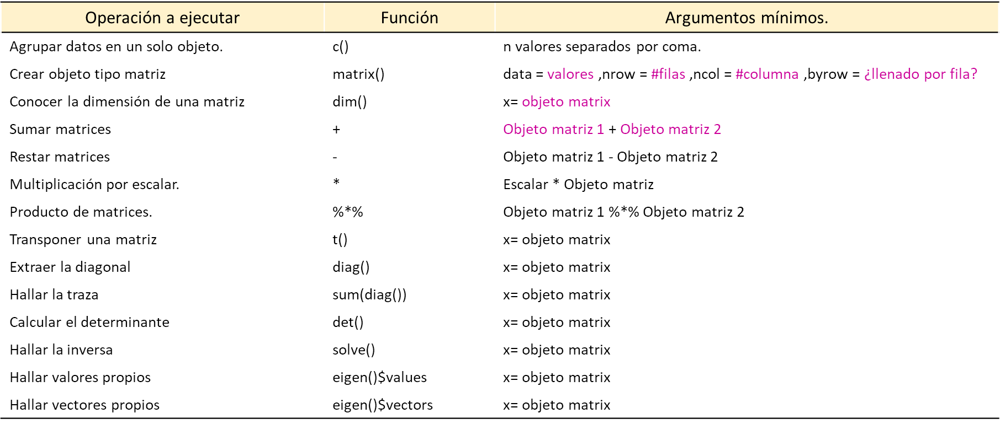
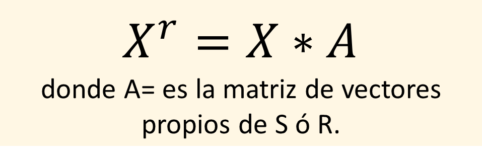

[,1] [,2] [,3]
[1,] 1 2 1
[2,] 3 -1 1Matrices básicas del análisis multivariante
Fundamentos básicos y aplicaciones
Kenedith M. Méndez - Gutiérrez
FUNCIONES BÁSICAS EN R PARA ÁLGEBRA LINEAL DE MATRICES
CREAR MATRICES.
Sea,
\[ A = \begin{bmatrix} 1 & 2 &1\\ 3 & -1 &1\end{bmatrix}\]
CREAR MATRICES.
Sea,
\[ B = \begin{bmatrix} 1 & 2 &1\\ 3 & -1 &1\end{bmatrix} \]
CREAR MATRICES.
\[ D = \begin{bmatrix} 1 & 0 &0\\ 1 & -1 & 1\\ 2 & 4 &3\end{bmatrix} \]
OPERACIONES CON MATRICES.
SUMA DE MATRICES
\[ A+B \]
RESTA DE MATRICES
\[
A-B
\]
MULTIPLICACIÓN DE MATRICES
\[ AB \]
MULTIPLICACIÓN POR ESCALAR
\[ \frac{1}{3}D \]
DETERMINANTE.
\[ |D| \]
INVERSA DE UNA MATRIZ.
\[ D^{-1} \]
VALORES Y VECTORES PROPIOS.
TRANSPUESTA DE UNA MATRIZ.
\[ D^{t} \]
MATRICES BÁSICAS DEL AMV
INFORMACIÓN - MATRIZ DE DATOS.
La base de datos de Soil_Matriz contiene la información de características fisicoquímicas de 13 muestras de suelos analizadas en los laboratorios de la Universidad Nacional Agraria La Molina, Lima - Perú. Las características analizadas fueron: pH, contenido de materia orgánica (MO), Porcentaje de arena, limo y arcilla, Conductividad eléctrica (EC), Capacidad de intercambio catiónico (CIC), contenido de P y K.
MATRIZ DE DATOS.
# IMPORTE LOS DATOS.
library(readxl)
Datos <- read_excel(path = "D:/Unimagdalena cursos/2022/2022-I/Datas/Soil.Matriz.xlsx")
# DEFINA LA MATRIZ DE DATOS - X.
X<-as.matrix(Datos[,3:11])
X pH MO Arena Limo Arcilla EC CIC P Ca
[1,] 3.8 1.7 80 16 4 0.72 5.76 8.1 0.74
[2,] 6.1 1.6 52 28 20 0.15 12.48 8.5 8.65
[3,] 4.4 3.8 68 26 6 0.18 25.60 44.1 3.08
[4,] 4.7 2.5 44 46 10 0.84 19.36 20.1 11.80
[5,] 6.2 1.7 42 34 24 0.09 14.08 3.6 8.04
[6,] 5.7 5.4 46 44 10 0.21 20.80 47.1 7.44
[7,] 7.2 2.6 26 42 32 1.00 20.00 17.5 17.21
[8,] 8.4 2.0 44 32 24 0.32 18.88 17.6 14.91
[9,] 4.8 1.9 58 30 12 0.83 17.28 15.8 12.49
[10,] 4.4 2.0 78 14 8 0.49 6.40 7.2 0.76
[11,] 7.6 1.3 48 38 14 1.09 13.60 8.9 10.56
[12,] 8.3 1.7 36 36 28 3.67 22.08 20.0 15.60
[13,] 8.4 1.1 50 28 22 7.17 13.92 50.0 9.57VECTOR DE MEDIA.
MATRIZ CENTRADA DE DATOS.
#crear el vector v1.
v1<-matrix(data = 1,nrow =13 ,ncol = 1,byrow =TRUE )
#crear la matriz centrada de datos MC.
MC<-X-(v1%*%t(Xbar))
# Imprimir resultados redondeados a dos décimales.
round(MC,2) pH MO Arena Limo Arcilla EC CIC P Ca
[1,] -2.35 -0.55 28.31 -15.85 -12.46 -0.57 -10.41 -12.55 -8.56
[2,] -0.05 -0.65 0.31 -3.85 3.54 -1.14 -3.69 -12.15 -0.65
[3,] -1.75 1.55 16.31 -5.85 -10.46 -1.11 9.43 23.45 -6.22
[4,] -1.45 0.25 -7.69 14.15 -6.46 -0.45 3.19 -0.55 2.50
[5,] 0.05 -0.55 -9.69 2.15 7.54 -1.20 -2.09 -17.05 -1.26
[6,] -0.45 3.15 -5.69 12.15 -6.46 -1.08 4.63 26.45 -1.86
[7,] 1.05 0.35 -25.69 10.15 15.54 -0.29 3.83 -3.15 7.91
[8,] 2.25 -0.25 -7.69 0.15 7.54 -0.97 2.71 -3.05 5.61
[9,] -1.35 -0.35 6.31 -1.85 -4.46 -0.46 1.11 -4.85 3.19
[10,] -1.75 -0.25 26.31 -17.85 -8.46 -0.80 -9.77 -13.45 -8.54
[11,] 1.45 -0.95 -3.69 6.15 -2.46 -0.20 -2.57 -11.75 1.26
[12,] 2.15 -0.55 -15.69 4.15 11.54 2.38 5.91 -0.65 6.30
[13,] 2.25 -1.15 -1.69 -3.85 5.54 5.88 -2.25 29.35 0.27MATRIZ DE VARIANZAS - COVARIANZAS.
#crear la matriz de var - cov (S).
S<-var(X)
# Imprimir resultados redondeados a dos décimales.
round(S,2) pH MO Arena Limo Arcilla EC CIC P Ca
pH 2.81 -0.64 -18.63 6.31 12.32 1.83 2.58 3.72 6.31
MO -0.64 1.36 -0.57 3.98 -3.41 -0.91 3.65 10.52 -0.97
Arena -18.63 -0.57 247.23 -130.72 -116.51 -5.75 -51.78 -19.48 -74.61
Limo 6.31 3.98 -130.72 95.64 35.08 -0.34 37.50 34.51 37.10
Arcilla 12.32 -3.41 -116.51 35.08 81.44 6.09 14.29 -15.03 37.51
EC 1.83 -0.91 -5.75 -0.34 6.09 3.99 0.06 14.78 2.41
CIC 2.58 3.65 -51.78 37.50 14.29 0.06 34.35 51.58 16.73
P 3.72 10.52 -19.48 34.51 -15.03 14.78 51.58 255.77 -1.10
Ca 6.31 -0.97 -74.61 37.10 37.51 2.41 16.73 -1.10 28.51MATRIZ DE CORRELACIONES.
#crear la matriz de correlaciones (R).
R<-cor(X,method = "pearson")
# Imprimir resultados redondeados a dos décimales.
round(R,2) pH MO Arena Limo Arcilla EC CIC P Ca
pH 1.00 -0.33 -0.71 0.38 0.81 0.55 0.26 0.14 0.70
MO -0.33 1.00 -0.03 0.35 -0.32 -0.39 0.53 0.56 -0.16
Arena -0.71 -0.03 1.00 -0.85 -0.82 -0.18 -0.56 -0.08 -0.89
Limo 0.38 0.35 -0.85 1.00 0.40 -0.02 0.65 0.22 0.71
Arcilla 0.81 -0.32 -0.82 0.40 1.00 0.34 0.27 -0.10 0.78
EC 0.55 -0.39 -0.18 -0.02 0.34 1.00 0.00 0.46 0.23
CIC 0.26 0.53 -0.56 0.65 0.27 0.00 1.00 0.55 0.53
P 0.14 0.56 -0.08 0.22 -0.10 0.46 0.55 1.00 -0.01
Ca 0.70 -0.16 -0.89 0.71 0.78 0.23 0.53 -0.01 1.00MATRIZ DE DISTANCIAS.
#crear la matriz de distancias d.
library(vegan)
d<-vegdist(X,method = "euclidean")
# Imprimir resultados redondeados a dos décimales.
round(as.matrix(d),1) 1 2 3 4 5 6 7 8 9 10 11 12 13
1 0.0 36.0 44.1 51.8 48.1 61.5 70.4 49.4 32.8 5.1 42.2 59.7 57.7
2 36.0 0.0 44.0 26.1 13.4 44.4 35.1 16.3 14.0 33.5 12.7 26.0 42.3
3 44.1 44.0 0.0 41.1 53.6 29.7 60.4 42.9 33.4 44.6 45.4 48.9 29.5
4 51.8 26.1 41.1 0.0 25.7 27.7 29.4 20.6 21.9 51.4 16.3 23.1 38.6
5 48.1 13.4 53.6 25.7 0.0 47.6 26.4 16.7 24.4 45.6 13.8 21.5 48.1
6 61.5 44.4 29.7 27.7 47.6 0.0 43.3 36.0 37.1 61.5 40.0 36.4 23.5
7 70.4 35.1 60.4 29.4 26.4 43.3 0.0 22.3 40.1 68.1 31.4 13.2 45.4
8 49.4 16.3 42.9 20.6 16.7 36.0 22.3 0.0 19.2 47.1 16.6 11.1 34.7
9 32.8 14.0 33.4 21.9 24.4 37.1 40.1 19.2 0.0 31.7 15.5 29.1 37.6
10 5.1 33.5 44.6 51.4 45.6 61.5 68.1 47.1 31.7 0.0 40.9 57.5 56.6
11 42.2 12.7 45.4 16.3 13.8 40.0 31.4 16.6 15.5 40.9 0.0 23.9 43.5
12 59.7 26.0 48.9 23.1 21.5 36.4 13.2 11.1 29.1 57.5 23.9 0.0 36.2
13 57.7 42.3 29.5 38.6 48.1 23.5 45.4 34.7 37.6 56.6 43.5 36.2 0.0MATRIZ ROTADA.
#crear la matriz rotada Xr.
A<-eigen(R)$vectors #Vectores propios
Xr<-MC%*%A
# Imprimir resultados redondeados a dos décimales.
round(Xr,2) [,1] [,2] [,3] [,4] [,5] [,6] [,7] [,8] [,9]
[1,] -33.36 -9.83 2.40 -3.83 -3.99 8.98 6.35 -10.58 8.63
[2,] -3.15 -8.63 -7.40 -2.93 1.26 -2.12 0.00 -6.08 -0.04
[3,] -12.05 16.84 19.31 -4.84 -9.03 7.87 0.39 9.95 5.09
[4,] 7.61 7.12 -5.55 12.58 0.36 2.38 -3.59 0.01 -1.98
[5,] 5.00 -9.21 -13.74 -0.46 4.47 -5.81 -5.43 -7.91 -3.07
[6,] 7.73 20.33 12.12 7.70 3.72 3.30 -2.63 15.63 -1.41
[7,] 26.54 -1.37 -11.21 1.02 5.75 -11.75 -4.48 2.24 -7.98
[8,] 10.31 -2.89 -4.90 -3.62 -0.38 -3.41 0.60 -0.34 -2.50
[9,] -4.79 -0.94 -2.18 1.06 -5.47 2.93 3.56 -3.93 1.98
[10,] -31.28 -11.41 1.65 -7.30 -3.45 6.71 5.83 -10.82 7.90
[11,] 2.02 -4.60 -9.16 6.59 2.14 2.18 -1.81 -6.39 -0.98
[12,] 19.20 -1.41 -3.85 -1.88 0.55 -7.75 -2.84 0.56 -4.95
[13,] 6.21 6.01 22.51 -4.09 4.08 -3.52 4.07 17.65 -0.69PROYECCIÓN DE LA MATRIZ ROTADA.
library(ggplot2)
#Ajuste de matrices variables.
B<-data.frame(v1=A[,1],v2=A[,2])
# Ajuste de matrices observaciones.
Xr<-as.data.frame(Xr)
rownames(Xr)<-Datos$place
#Gáfico.
ggplot(data = Xr,mapping = aes(x = V1,y = V2))+
geom_hline(yintercept = 0,linetype=2, color="#ced4da")+
geom_vline(xintercept = 0,linetype=2, color="#ced4da")+
geom_point(fill="#ffb703",size=12,alpha=0.4, shape=21)+
geom_text(label=row.names(Xr),color="black", size=3)+
geom_segment(data=B, aes(x = 0, y = 0, xend = v1*100, yend = v2*100),
col="black", arrow = arrow(length = unit(0.2,"cm")))+
geom_text(data=B,aes(x = v1*100+4, y=v2*100),
label=c("pH", "MO","Sand", "clay","silt","EC","CIC", "P", "Ca"))+
theme_test()+labs(x="Dim 1", y="Dim 2")+coord_equal()